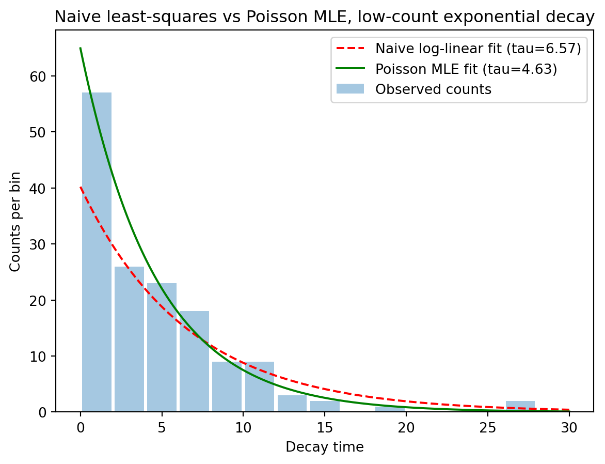

In this section, we will discuss the relationship between machine learning and statistical inference. In particular we will explore the technique of maximum likelihood estimation (MLE). This is an important method in it’s own right, which allows the parameters of a model to be estimated from data. We relate this to the loss functions introduced in Chapter 15.
16.1 Likelihood
You will be familiar with the concept of a probability distribution, \(\mathcal{P}(x)\), which describes the probability of observing a particular value, or outcome, \(x\). Frequently such a distribution is characterised by a set of parameters, \(\theta\), which describe the shape of the distribution. For example, a Gaussian distribution is characterised by its mean and variance, \(\theta = (\mu, \sigma^2)\). We can write this \(P(x \mid \theta)\), which is the probability of observing \(x\) given a particular choice of parameters \(\theta\).
The likelihood is a related concept, which describes how likely a particular set of parameters is, given some observed data. It is defined as the probability of observing the data, \(\mathcal{D} = \{x_1, x_2, \ldots, x_N\}\), as a function of the parameters \(\theta\) :
Note the difference : the likelihood is a function of \(\theta\), with the data \(\mathcal{D}\) fixed, whereas the probablity distribution is a function of \(x\) with \(\theta\) fixed.
When \(\mathcal{D}\)$ comprises \(N\) independent data points as above, the likelihood factorises as a product:
Because a product of many small probabilities is numerically awkward (it underflows very quickly), and because logarithms turn products into sums, it is standard practice to instead maximise the log-likelihood:
Since \(\log\) is monotonic, this doesn’t change the location of the maximum. And since it is conventional to find minima (see Chapter 13) we will minimise the negative log-likelihood (NLL):
Any suitable numerical optimisation method can be used to find the MLE, including gradient descent (Chapter 13) and its variants.
16.2.1 MLE in Practice
MLE is a powerful method for extracting parameters of interest from data. Consider measuring the mass of the Higgs boson at the Large Hadron Collider, where the data comprises invariant mass measurements taken from a sample of collision events. The probability distribution for such data can be described by a Breit-Wigner distribution, characterised by two parameters: the mass of the Higgs boson, \(m_H\), and its decay width, \(\Gamma_H\). In order to measure these parameters, we construct the likelihood of observing the data given a particular choice of these parameters, and then find the values of \(m_H\) and \(\Gamma_H\) that maximise this likelihood.
The method can be further extended to include the effect of measurement uncertainty. For example, the uncertainty on our invariant mass measurements can be modelled with a Crystal Ball function (essentially a Gaussian distribution with a power-law tail, which is often a better model for the detector response than a simple Gaussian). The likelihood is then the convolution of the Breit-Wigner distribution with the Crystal Ball function. Maximum likelihood estimation will again find the values of \(m_H\) and \(\Gamma_H\), but potentially also the parameters of the Crystal Ball function that describe the detector response. Such parameters are known as nuisance parameters, since they are not of direct interest, but must be included in the model in order to properly model the distribution of data.
16.2.2 MLE Example
A more simple example is estimation of the decay constant \(\lambda\) from a small sample of radioactive decay times. In this case the probability distribution for the data is an exponential function, \(P(x|\lambda) = \lambda e^{-\lambda x}\). Naively, \(\lambda\) can be found from the reciprocal of the mean observed decay time, and this will work reasonably well for large samples. However, this is a biased estimator of \(\lambda\), which becomes particularly important with small sample size. Maximum likelihood estimation can be used to properly account for the asymmetric uncertainties that arise in this case as shown in the example below.
import numpy as npimport scipy.optimize as optimport matplotlib.pyplot as pltrng = np.random.default_rng(42)# ---- 1. Generate synthetic data ----tau_true =5.0N_events =150# deliberately low statistics, to expose the problemdecay_times = rng.exponential(scale=tau_true, size=N_events)# bin into a histogram, as a real detector would record counts per time binbin_edges = np.linspace(0, 30, 16)bin_centres =0.5* (bin_edges[:-1] + bin_edges[1:])counts, _ = np.histogram(decay_times, bins=bin_edges)print("Bin counts :", counts)# ---- 2. The naive (statistically incorrect) approach ----# log(counts) + ordinary least squares: undefined for zero-count bins,# and implicitly assumes Gaussian errors on the counts (poor at low N)mask = counts >0log_counts = np.log(counts[mask])t_masked = bin_centres[mask]design = np.vstack([t_masked, np.ones_like(t_masked)]).Tslope, intercept = np.linalg.lstsq(design, log_counts, rcond=None)[0]tau_naive =-1/ slopeprint(f"\nNaive log-linear fit : tau = {tau_naive:.2f} "f"({np.sum(~mask)} of {len(counts)} bins discarded)")# ---- 3. Correct approach: Poisson maximum likelihood ----def expected_counts(params, edges):"""Expected count per bin: exponential decay law integrated over the bin.""" A, tau = params lo, hi = edges[:-1], edges[1:]return A * (np.exp(-lo/tau) - np.exp(-hi/tau))def neg_log_likelihood(params, counts, edges): mu = np.clip(expected_counts(params, edges), 1e-10, None) # guard log(0)# Poisson log-likelihood; the count! normalisation is dropped since it# doesn't depend on the fit parametersreturn np.sum(mu - counts * np.log(mu))result = opt.minimize( neg_log_likelihood, x0=[N_events, 3.0], args=(counts, bin_edges), method='Nelder-Mead')A_mle, tau_mle = result.xprint(f"Poisson MLE fit : tau = {tau_mle:.2f}")# ---- 4. Gold standard: unbinned MLE, using every decay time individually ----# for an exponential distribution the MLE of the mean lifetime has a simple# closed form: it is just the sample mean of the (unbinned) decay timestau_unbinned_mle = np.mean(decay_times)print(f"Unbinned MLE (exact) : tau = {tau_unbinned_mle:.2f}")print(f"True value : tau = {tau_true:.2f}")# ---- 5. Plot ----t_fine = np.linspace(0, 30, 200)bin_width = bin_edges[1] - bin_edges[0]naive_smooth = np.exp(intercept) * np.exp(-t_fine/tau_naive)mle_smooth = (A_mle/tau_mle) * bin_width * np.exp(-t_fine/tau_mle)plt.figure(figsize=(7,5))plt.bar(bin_centres, counts, width=bin_width*0.9, alpha=0.4, label='Observed counts')plt.plot(t_fine, naive_smooth, 'r--', label=f'Naive log-linear fit (tau={tau_naive:.2f})')plt.plot(t_fine, mle_smooth, 'g-', label=f'Poisson MLE fit (tau={tau_mle:.2f})')plt.xlabel('Decay time')plt.ylabel('Counts per bin')plt.legend()plt.title('Naive least-squares vs Poisson MLE, low-count exponential decay')plt.show()
Bin counts : [57 26 23 18 9 9 3 2 0 1 0 0 0 2 0]
Naive log-linear fit : tau = 6.57 (5 of 15 bins discarded)
Poisson MLE fit : tau = 4.63
Unbinned MLE (exact) : tau = 4.63
True value : tau = 5.00

16.3 MLE and Machine Learning
MLE is closely related to the loss functions used in machine learning. We can use MLE to derive the loss functions used in Chapter 15, and hence justify their use from a statistical perspective.
16.3.1 Mean Squared Error
Suppose we have an underlying model \(\hat{y} = f(\theta, x)\) that describes our data \(x,y\) in terms of some parameters \(\theta\). Now we assume that the observed data is the model’s prediction plus Gaussian noise :
Note that this is identical to the Mean Squared Error loss function defined in Chapter 15, up to a multiplicative constant and an additive constant that do not affect the location of the minimum : \[
\frac{1}{n{}} \sum^{N}_{i=1}(y_i-\hat{y}_i)^2.
\]
In other words, minimising the MSE loss is equivalent to maximising the likelihood of observing the data under a Gaussian noise model. Using MSE as a loss function is an implicity assumption that errors are Gaussian-distributed, whether or not that assumption is stated explicitly.
16.3.2 Binary Cross-Entropy
As discussed in Chapter 15, the Binary Cross-Entropy (BCE) loss function is commonly used for binary classification problems. Here our targets are binary, \(y_i \in \{0, 1\}\), and our model outputs a probability\(\hat{P}_i = f(\theta, x_i) \in [0, 1]\) of observing \(y_i = 1\).
We can justify the choice of loss function from a statistical perspective, by assuming that the observed data is drawn from a Bernoulli distribution. The Bernoulli distribution is a special case of the Binomial distribution, for a single trial, \(N=1\). It has the probability distribution :
This is identical (within a multiplicative factor, which doesn’t affect the location of the minimum)to the Binary Cross-Entropy loss given in Chapter 15. Similarly to above, we interpret the use of BCE loss as an implicit assumption that uncertainties are Bernoulli-distributed.